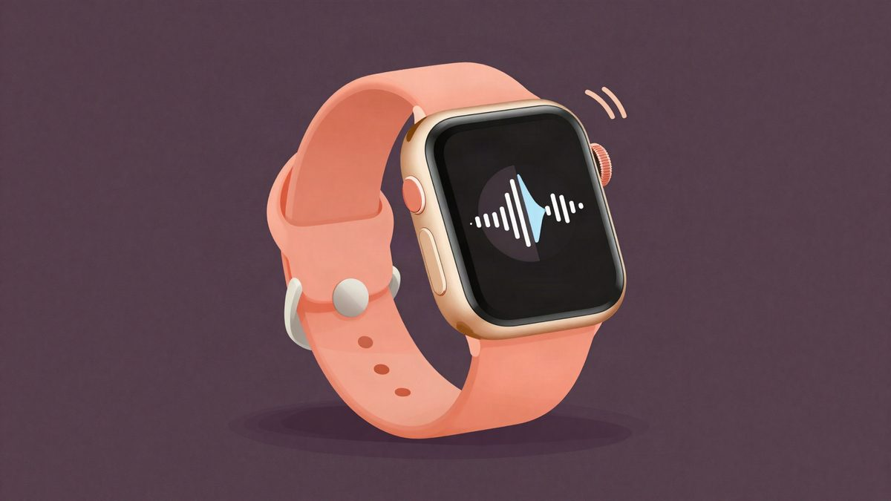
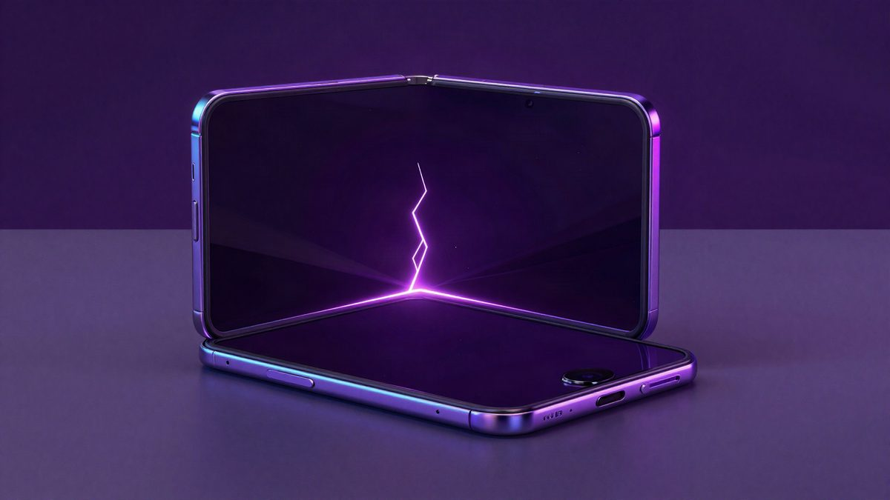
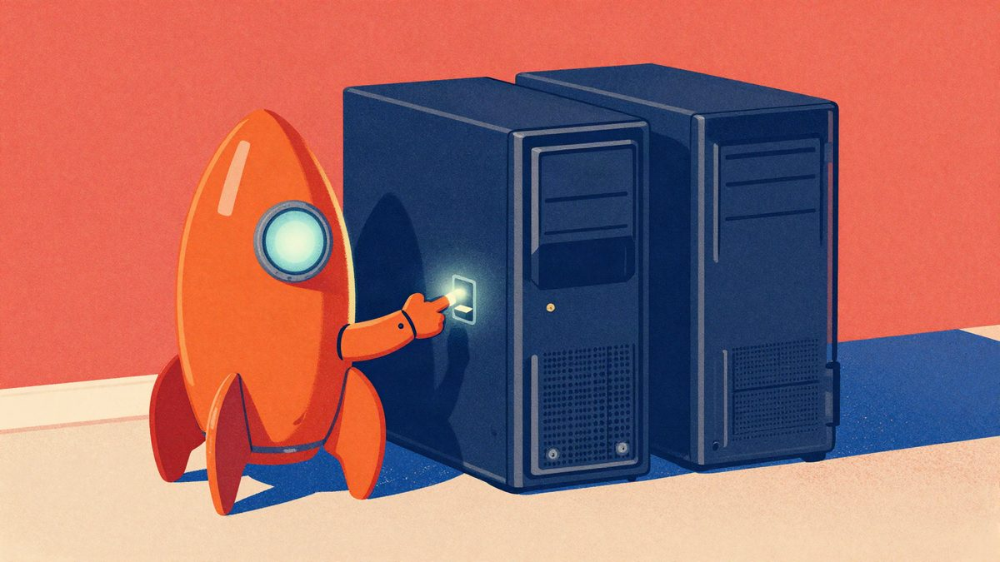

Apple Watch Series 12 dobiva Live Rewind i Siri Recap: prvi beta s funkcijama stalnog slušanja

Apple je u prvom developerskom betau iOS-a 27.3 i watchOS-a 27.3 počeo testirati Live Rewind i Siri Recap, funkcije koje koriste mikrofon Apple Watcha za transkripte i sažetke razgovora. Kritičari upozoravaju da osobe u blizini ne mogu dati privolu, a Apple tvrdi da je na to pomislio. Javno izdanje planirano je za prosinac, a u EU funkcije za sada nisu dostupne.
Apple je u utorak pustio prvi developerski beta iOS-a 27.3 i watchOS-a 27.3, a s njim i dvije funkcije za Apple Watch Series 12 koje su izazvale polemike oko privatnosti: Live Rewind i Siri Recap. Zajedno se zovu Audio Intelligence, a odabrani korisnici mogu ih isprobati u osnovnom obliku. Javno izdanje planirano je za prosinac.
Apple je Series 12 i nove Siri funkcije predstavio na jesenskom događaju u rujnu. Sat je u prodaju stigao prije nekoliko tjedana, ali bez te dvije funkcije.
Što funkcije rade
Live Rewind aktivira se dvostrukim pritiskom na digitalnu krunicu. Sat tada prikaže transkript posljednjih 15 sekundi razgovora u blizini. Isječak je moguće spremiti kao bilješku u samostalnoj aplikaciji Siri, a ako ga korisnik ne spremi, briše se nakon 30 sekundi.
Siri Recap koristi ambijentalno slušanje pa tijekom dana izrađuje sažetke, ključne točke i druge bilješke iz razgovora korisnika. Sažetke je moguće spremiti na iPhone, među ostalim u aplikaciju Notes, a inače se brišu u roku od sedam dana, piše TechCrunch. Obje funkcije treba ručno uključiti.
Pitanje privatnosti
Kritičari upozoravaju da osobe u blizini ne mogu dati privolu za snimanje, pa bi funkcije u nekim saveznim državama SAD-a mogle biti i nezakonite. Apple tvrdi da je na to pomislio. Obećava izostavljanje osobnih identifikatora, a pri aktiviranju Live Rewinda oglasi se zvučni signal i na zaslonu se prikaže animacija.
Sličan pristup već je probala Meta na pametnim naočalama, koje su na internetu naišle na široku kritiku. Naočale imaju oznake koje upozoravaju okolinu na snimanje, no korisnici su ih uspjeli zaobići.
Funkcije još nisu u konačnom obliku, pa se do javnog izdanja mogu promijeniti.
Dostupnost u Europi
Live Rewind i Siri Recap trenutačno nisu dostupni u Europskoj uniji, što znači ni u Hrvatskoj. Apple je tu odluku donio prije nekoliko mjeseci i obrazlaže je strogim propisima EU-a o tehnologiji. U priopćenju navodi da konstruktivno surađuje s EU-om kako bi pronašao rješenje. Datum eventualne dostupnosti u Europi nije naveden.
Izvor: Gizmodo
Povezani članci
 Siri se otvara aplikacijama trećih strana: iOS 27.3 donosi podršku za sve aplikacije3. studenoga 2026.
Siri se otvara aplikacijama trećih strana: iOS 27.3 donosi podršku za sve aplikacije3. studenoga 2026.
iPhone Duo: prvi korisnici prijavljuju puknuća zaslona uz šarku na dan prodaje23. listopada 2026.
Postman navodno bez pitanja instalira AI plugine u Codex i Claude Code3. studenoga 2026.